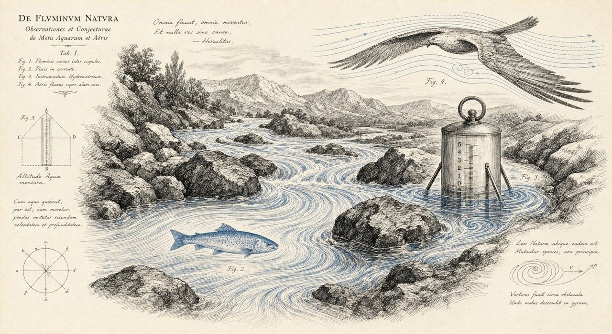
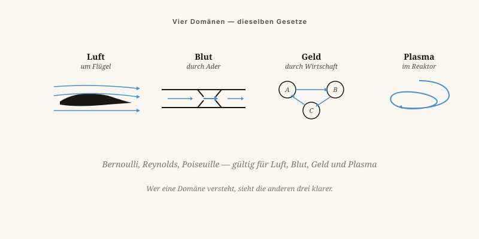

Luft, Blut, Geld, Ideen und Plasma gehorchen erstaunlich gleichen Gesetzen. Warum lehrt das keine Schule?
Von Jacobus van Merksteijn · 10 Min. Lesezeit · 23. Mai 2026

Das Wesen von Strömungen — alles fließt
Luft um einen Flügel. Blut durch eine Ader. Geld durch eine Wirtschaft. Ideen durch eine Gesellschaft. Plasma in einem Fusionsreaktor. Es sind alles Strömungen, und Strömungen folgen Gesetzen, die erstaunlich gleich sind, unabhängig vom Medium.
Warum wird das nicht gelehrt? Weil der Unterricht in Fächer aufgeteilt ist. Wer Physik studiert, lernt Navier-Stokes. Wer Wirtschaft studiert, lernt Angebot und Nachfrage. Wer Medizin studiert, lernt Herzschlag und Durchblutung. Niemand lernt, dass es dieselbe Mathematik ist.
Das ist keine Faulheit — es ist institutionell. Generalisten werden nicht befördert. Spezialisten schon.

Meine Beschichtungen reduzieren den Widerstand eines Schiffsrumpfes, indem sie die Grenzschicht glatt halten. Bewuchs stört diese Grenzschicht. Die gängige Lösung war: Gift in die Farbe. Meine Lösung: eine Oberfläche, an der Bewuchs nicht haften möchte — zwitterionische und Silikonchemie, die nachahmt, was Haifischhaut seit Millionen von Jahren tut.
Was hat das mit Demokratie zu tun? Dasselbe Prinzip. Eine Gesellschaft, in der „Bewuchs" — Parasitismus, Regulierungsdruck, Lobbyismus — nicht haften kann, strömt schneller und verbraucht weniger.
Nicht durch Gewalt oder Ausschluss, sondern durch eine andere Oberfläche. Eine transparente, einfache, berechenbare Verwaltung ist auf Nano-Ebene glatt. Wer parasitär daran zu leben versucht, gleitet ab.
In der Luft: Auftrieb unter einem Flügel. In einer Organisation: Je schneller Informationen zirkulieren, desto weniger hierarchischer Druck ist nötig, um Entscheidungen durchzusetzen.
Über einer bestimmten Geschwindigkeit wird jede Strömung turbulent. In Wasser, in Luft, in einer Besprechungsstruktur: Ab einer bestimmten Größe brechen Systeme in Chaos zusammen. Härter drücken hilft nicht — Maßstab anpassen schon.
Strömung ist umgekehrt proportional zur vierten Potenz des Radius. Halbiert man den Durchmesser, fällt der Durchfluss um das Sechzehnfache. Kleine Regulierungsverschärfungen kosten unverhältnismäßig viel Wirtschaftswachstum.
Im Blut: weniger Durchströmung bedeutet Stauung. Im Geld: Kapital, das nicht abfließen kann, bildet Blasen. In Ideen: Eine Gesellschaft, die nicht äußern kann, explodiert schließlich.
Luft bei 1 bar hat Moleküle, die sich alle 60 Nanosekunden berühren. Ein Mensch hat eine Resonanzfrequenz von 1 bis 2 Hz. Ein Gebäude, eine Brücke, eine Organisation — jedes System hat seine eigene Frequenz.
Wer zwei Systeme auf dieselbe Wellenlänge bringt, überträgt Energie und Information schneller. Eine Lehrerin, die ihre Klasse nicht erreicht, arbeitet auf der falschen Frequenz. Ein Unternehmer, der keinen Investor findet, ebenso. Die Lösung ist meistens nicht „stärker senden", sondern „anderes Signal".
Nicht eine Theorie, sondern eine Lesebrille — durch die die Welt von selbst zusammenhängender wird.
Luft, Blut, Geld, Ideen und Plasma gehorchen erstaunlich ähnlichen Gesetzen. Warum lehrt das keine Schule?
Luft um einen Flügel, Blut durch eine Ader, Geld durch eine Volkswirtschaft, Ideen durch eine Gesellschaft, Plasma in einem Fusionsreaktor — das sind alles Strömungen, die dieselbe Mathematik befolgen. Warum wird das nicht gelehrt? Weil der Unterricht in Fächer aufgeteilt ist. Wer Physik studiert, lernt Navier-Stokes. Wer Wirtschaft studiert, lernt Angebot und Nachfrage. Niemand lernt, dass es dieselbe Mathematik ist. Generalisten werden nicht promoviert. Spezialisten schon.
Vier Gesetze, die über ihr Fach hinaus gelten: Bernoulli (Geschwindigkeit senkt Druck — in einer Organisation: je schneller Informationen zirkulieren, desto weniger hierarchischer Druck ist nötig), Reynolds (über einer Grenze wird jede Strömung turbulent — härter zu drücken hilft nicht, den Maßstab anzupassen schon), Poiseuille (halbiert man den Querschnitt, fällt der Fluss um den Faktor sechzehn — kleine Regulierungserschwernisse kosten überproportional viel Wirtschaftswachstum) und das Kontinuitätsprinzip (was hineingeht, muss wieder heraus — Kapital, das nicht abfließen kann, bildet Blasen).
Das SeaSkin-Beispiel macht es anschaulich: Eine Antifouling-Beschichtung hält die Grenzschicht eines Schiffsrumpfs glatt — ohne Biozide. Dasselbe Prinzip gilt für eine Gesellschaft: Ein transparentes, einfaches Regierungssystem ist auf der Nano-Ebene glatt. Wer versucht, parasitär darauf zu leben, gleitet ab.
Jedes System hat seine eigene Frequenz. Luft bei 1 bar enthält Moleküle, die sich alle 60 Nanosekunden berühren. Eine Lehrerin, die ihre Klasse nicht erreicht, arbeitet auf der falschen Frequenz. Die Lösung ist selten „lauter senden", sondern fast immer „anderes Signal". Strömungslehre ist keine Theorie — sie ist eine Lesebrille, durch die die Welt von selbst zusammenhängender wird.
Wo sehen Sie Strömungen in Ihrer eigenen Arbeit oder Ihrem Leben? Und wo steckt die Verstopfung?